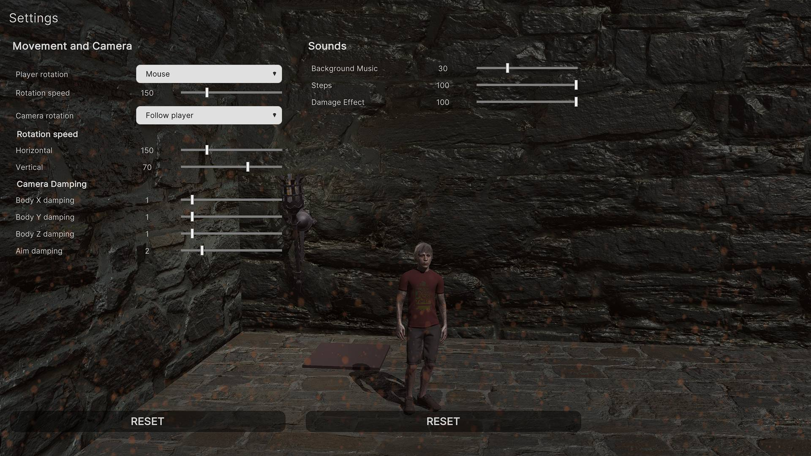

You can see the progress with the game on GitHub.
My pet game from the "Infected Verity" universe. Development is still in progress.
You suddenly woke up stuck in the mysterious labyrinth. Will you focus on searching for the exit, or will you explore this place?
Already implemented:
You can step into the trap and get health and sanity damage. You can restore your sanity near the fire and heal with time. Sanity value affects the lighting and the appearance of the sky.
There are Third view (POV and following) and Map view cameras, implemented with Cinemachine Camera. Camera rotation can be set to follow player, with mouse, or right click mouse.
Player movement is realized with Character Controller. Player rotation can be controlled with mouse, or keyboard.
I used the Nav Mesh Agent to implement enemies' movement, chasing and searching the player. Also, I used the new Input System and UI Toolkit.